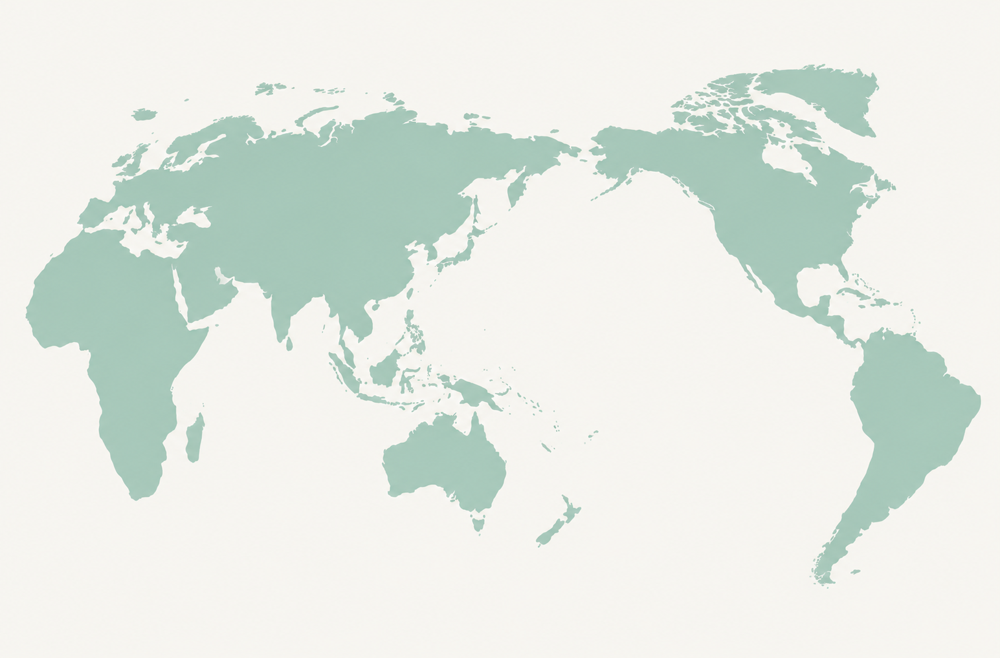

Academic travel · Conference attendance
Conferences across the map.
A geographic and chronological record of conferences, workshops, and research programs I have attended.
Places
Conference map
Select a marker to see the meetings attended in that country. The number inside each marker is the attendance count.

The map image could not be loaded. Make sure that world-map.png is uploaded next to conferences.html.
Chronology